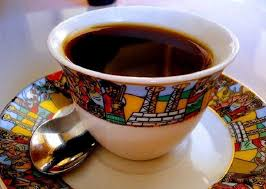
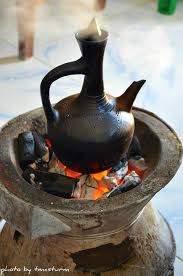

Ethiopian Coffee Culture
Ethiopia is considered to be the birthplace of the coffee plant and of coffee culture. It is thought that coffee was discovered in Ethiopia as long ago as the ninth century. Today, over 12 million people in Ethiopia are involved in the cultivation and picking of coffee, and coffee remains a central part of Ethiopian culture.
One common Ethiopian coffee saying is "Buna dabo naw". This literally translates to "Coffee is our bread". It demonstrates the central role that coffee plays in terms of diet and illustrates the level of importance placed on it as a source of sustenance
The Ethiopian Coffee Legend
The most popular legend of coffee in Ethiopia usually goes something like this: Kaldi, an Abyssinian goat herder from Kaffa, was herding his goats through a highland area near a monastery. He noticed that they were behaving very strangely that day, and had begun to jump around in an excited manner, bleating loudly and practically dancing on their hind legs. He found that the source of the excitement was a small shrub (or, in some legends, a small cluster of shrubs) with bright red berries. Curiosity took hold and he tried the berries for himself.